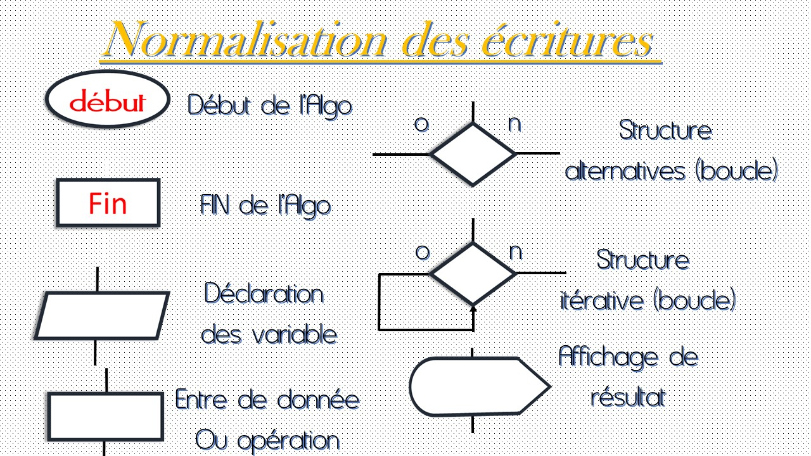
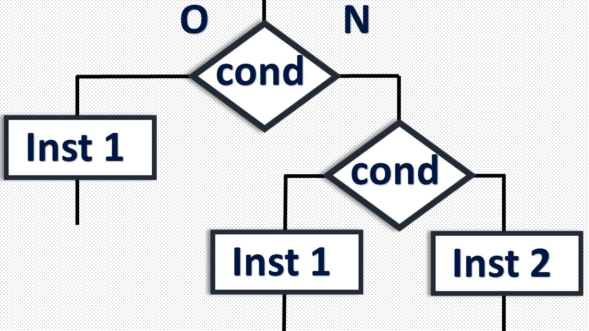
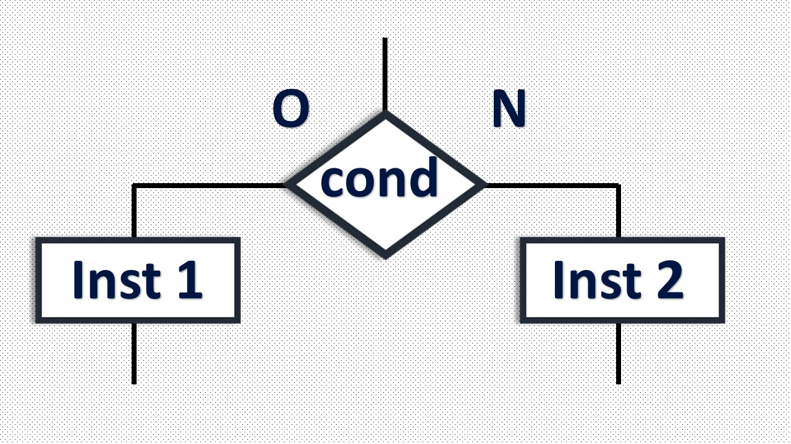
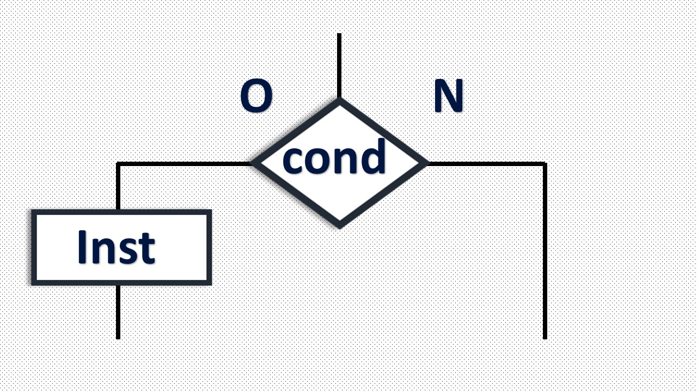
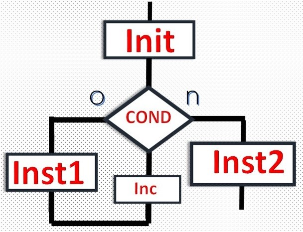

ALGORITHME
- Définition
L’algorithme est l’ensemble des étapes qu’il faut franchir pour résoudre un problème spécifique. Pour pouvoir résoudre un problème, il faut avant tout comprendre celui-ci. Il faut se poser les questions suivantes :
- Qu’est-ce qu’on attend exactement de moi ?cette question nous oriente vers le résultat attendu
- Qu’est-ce que j’ai besoin ?ici on définie les éléments initiaux, nécessaire à la résolution du problème
- Ce qu’on voit dans un algorithme:

- Caractéristique d’un algo
L’algo est un moyen pour le programmeur de présenter son approche du problème à d’autre personne. En effet un algo est l’énoncé d’une suite d’opération permettant de répondre au problème. Ainsi un algo doit être :- lisible: même par un non informaticien l’algo doit être compréhensible
- de haut niveau : l’algo doit pouvoir être traduit en importe quelle langage de programmation. Il ne
doit pas faire appel à des notions techniques relatives à un programme particulier ou bien à un SE donné
- précis : chaque élément de l’algo ne doit pas porter à confusion, il est très important de lever
toute ambigüité
- concis : un algo ne doit pas être trop long. Si c’est le cas, il faut décomposer le problème en
plusieurs sous problèmes
- structuré : un algo doit être composé de différente partie facilement identifiable
Remarque: Un algo est dit séquentiel si ses instructions s’exécutent les une après les autres. Si ses instructions s’exécutent en même temps il est parallèle. Et si l’algo exploite des tâches s’exécutant sur un réseau de processeur on parle d’algo réparti.
- Les structures de contrôles:
- structure alternative
C’est une structure qui permet d’exécuter une ou plusieurs instructions selon la valeur d’une condition. Il existe 3 formes:- forme générale 
- forme simplifiée
- forme imbriquée
- structure itérative
Une structure itérative est une structure qui permet d’exécuter une ou plusieurs instructions jusqu’à satisfaction d’une condition. Il existe 2 formes :- forme « tant que…faire »
- forme « répéter…jusqu’à… »

- Qu’est-ce qu’on attend exactement de moi ?cette question nous oriente vers le résultat attendu
LA PROGRAMMATION
- Introduction
Un ordinateur est une machine ne sachant qu’obéir à très peu de chose tel que :
- addition, soustraction, multiplication en binaire, uniquement sur des entiers
- sortir un résultat ou lire une valeur binaire
- comparer des nombres
Le « PASCAL » créé par WIRTH au début des années 70 possède des instructions assez claires et favorise une approche méthodique et structuré. Le Pascal est un langage compilé c’est-à-dire qu’il faut :
- entrer un texte dans l’ordinateur (à l’aide d’un programme appelé éditeur)
- le traduire en langage machine c’est-à-dire un code binaire compréhensible par l’ordinateur : c’est la compilation et éventuellement l’édition de lien (LINK)
- l’exécuter
- Contrairement à un basique interpréter l’exécution sera beaucoup plus rapide puisqu’il n’y aura plus à effectuer.
- Program nom du programme ;
- Uses nom bibliothèque ;
- Const identificateur=valeur ;
- Type nom de type=description ;
- Var identificateur1=type1 ;
- identificateur2=type2 ;
begin instruction1 ; instruction2 ; end.
- identificateur2=type2 ;
REMARQUE
Le langage Pascal ne distingue pas les majuscules et les minuscules, ignore les tabulations, les répétitions d’espace et les retours à la ligne. Ces mises en forme de texte sont donc facultatives. Elles ont pour but la lisibilité du code source. Il y a donc intérêt à les utiliser rationnellement
- Les instructions sont terminées par un « ; »
- Les retours à la ligne et les tabulations (indentation) sont facultatifs mais fortement recommandés
- Le « end » final est suivit d’un « . » tout ce qui suivra sera ignorer par le compilateur
- Ce qui est entre{…} est ignorer par le compilateur : cela constitue un commentaire
Un programme Pascal est composé d’une tête, d’une partie déclarative et d’un corps :
- L’entête: est composé du mot programme suivi du nom du programme
- La partie déclarative: de notre programme est limitée à la déclarative de 2 variables ainsi que de l’insertion d’une bibliothèque appelé : crt.
- variable : c’est un emplacement en mémoire vive réserver par le programmeur. Cet emplacement doit
avoir un nom, respectant les règles standards d’affectation de nom et un type qui définit la taille de l’emplacement réservé.
- Programmation : c’est la traduction d’un algorithme en un langage compris par l’ordinateur.
- Déclaration d’une variable
syntaxe : var NomVar : type ;
- Déclarer une variable c’est réservée une certaine place mémoire adaptée au type de la variable et lui associé un identificateur. Un identificateur (tout nom que l’on choisit) peut être formé des lettres A à Z, de chiffres 0 à 9, de certains caractères spéciaux. Il ne doit pas comporter d’espace et ne doit pas dépasser 127 caractères. L’identificateur doit être significatif. Le premier caractère composant un identificateur doit être une lettre. Le langage Pascal ne fait pas de différence de casse (majuscule/minuscule)
- Les types simples connus en Pascal sont : real : nombre réel ; integer : entier naturel ; char : un caractère et
booléen
- entrer de données
Syntaxe : readln NomVar ;
- Cette instruction permet l’entrer au clavier d’une variable. Il faut veiller à ce que cette entrée corresponde bien au type de la variable attend une entrée. Il est judicieux d’affiché au part avant un message pour indiquer ce qu’on attend
- Affichage de données
Syntaxe : writeln(Message) ;
- Structure alternative
- Forme générale :
if (cond)then Inst1 Else Inst2 ; - Bloc d’instruction :
if(cond)then - Begin
- Inst1;
- Inst2;
- End
Else - Begin
- Inst4;
- Inst5;
- End;
REMARQUE- L’opérateur d’affection est “:=”
- Un bloc d’instruction sera délimité par « begin et end ; »
- Dans une structure alternative, dans sa forme générale, l’instruction avant « else » ne se termine pas par « ; »
- Après « then » , on passe du côté « oui »
- Bloc d’instruction :
- Forme générale :
- structure itérative
- La boucle « while » (tant que)
Syntaxe :
init ;- While cond do
- Begin
- Inst1 ;
- Inc ;
- End ;
- Inst2;
• « while » signifie « tant que ».elle permet de répéter l’exécution d’une ou plusieurs instructions. La condition d’arrêt est une expression booléenne. Les instructions à l’intérieur de la boucle seront exécutées tant que la condition d’arrêt reste vraie.
NB : les variables de la condition d’arrêt doivent être initialisés avant le « while ». le « while » continue de boucler tant que la condition d’arrêt n’est pas fausse. Pour éviter une boucle infinie , il faut obligatoirement que parmi les instructions de la boucle il y en ait une rendant la condition d’arrêt fausse à un moment donées.
- Begin
- la boucle « for »
-syntaxe :
for compteur=début to fin do- {begin}
- Inst1 ;
- {end ;}
- Inst2 ;
• Cette expression signifie « pour ». « compteur » est la variable de boucle, » début et fin » sont respectivement les bornes. « début et fin » sont d’abord évalués puis « compteur » prend la valeur de « début ». si compteur <= fin, alors inst1 est exécutée puis « compteur » est incrémenté de 1.
NB : l’instruction de la boucle (inst1) n’est pas exécutée en si début>fin. Il est totalement interdit de modifier la valeur du compteur dans le corps de la boucle. L’incrément de 1 n’est pas modifiable. Pour avoir une boucle « for » décroissante on écrit :
For Compteur= Fin down to Début do- {begin}
- Inst1;
- {end;}
- Inst2;
- la boucle “repeat”
Syntaxe:
repeat - Inst1;
- Inst2;
- Inst n;
Until cond;
• Cette instruction signifie “repeater …jusqu’à …”. Elle permet comme le « while » de répéter l’exécution d’une ou plusieurs instructions. La condition d’arrêt est une expression booléenne. Le bloc d’instruction est exécuté puis la condition d’arrêt est évaluée. Si cette dernière est vraie alors on s’arrête sinon on continue.
NB : Le bloc d’instruction est exécutée au moins 1 fois. Le test de la condition d’arrêt étant évalué après le bloc d’instruction, cette condition peut être affectée dans le bloc. Pas besoin d’encadrer le bloc d’instruction par un « begin et end », le « repeat et until » joue déjà ce rôle.
- La boucle « while » (tant que)
- Choix de la boucle
• Si le nombre d’itération est connu aprioris, on utilise la « boucle for »
• Sinon :
* on utilise « repeat » quand il y a toujours au moins une itération
* on utilise « while » quand le nombre d’itération peut être nul
LA PROGRAMMATION EN PROCEDURE SEPAREE
- Principe
Il s’agit simplement de donner un nom à un groupe d’instruction. Ensuite, l’appel de ce nom à divers endroit du programme provoque à chaque fois l’exécution de ce groupe d’instruction. NB : le nom de la procédure est un identificateur. On déclare toute procédure avant le « begin » du programme principale.
- Appel
On peut très bien appeler une procédure P1 depuis une procédure P2, mais il faut que la procédure P1 ait été déclarée avant la procédure P2.
- Variable local
Les objets du programme qui ne sont utiles que dans la procédure peuvent être définit dans les déclarations locales de la procédure.
Une procédure est un sous programme. Ecrire des procédures permet de découper un programme en plusieurs morceaux. Chaque procédure définit une nouvelle instruction que l’on peu appeler en tout endroit du programme. On peut ainsi réutiliser le code d’un sous programme. Procédure sans paramètre